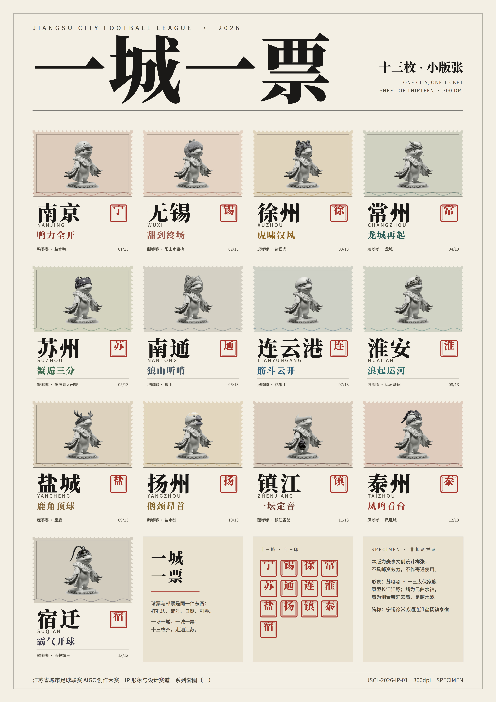
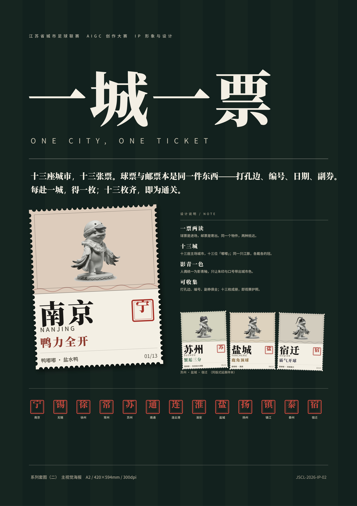
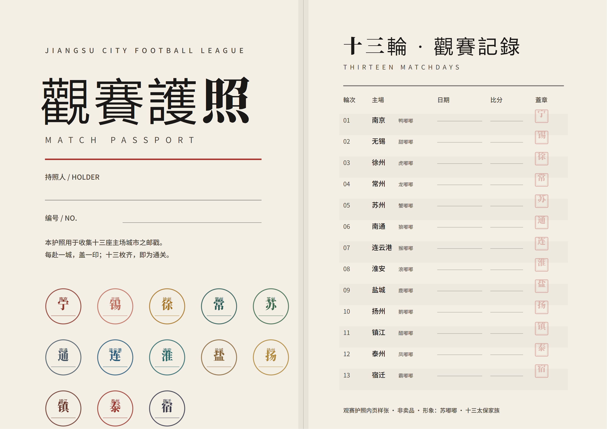
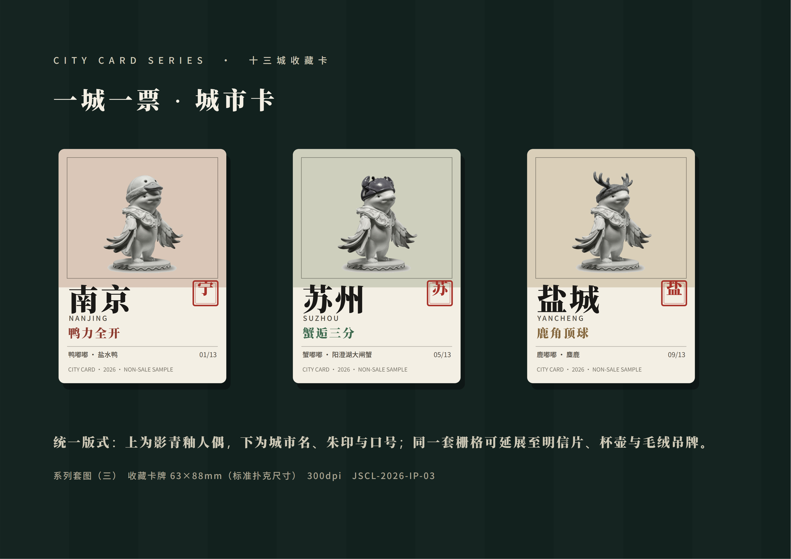

球票与邮票是同一件东西：打孔边、编号、日期、副券。
前者让你进场，后者替一座城出门——所以十三座城市，做十三张票。
A3，4×4 栅格：十三枚票 + 三块过桥（说票／十三印／SPECIMEN 声明）。四边打孔，孔径与孔距按 60×75mm 票幅换算。

A2。左边一张放大的票——南京·鸭嘟嘟，右上角一枚朱印「宁」；右边是设计说明与同版式的三张样本；底部十三枚红印一字排开。

A4 跨页。左页是十三座城市的邮戳位，右页是十三轮观赛记录：轮次、主场、日期、比分、盖章。每赴一城，盖一印；十三枚齐，即为通关。

63×88mm，标准扑克尺寸。上为影青釉人偶，下为城市名、朱印与口号；同一套栅格可延展到明信片、杯壶与毛绒吊牌。

苏超是十三座城市轮流做主场。一场比赛，对一座城来说就是一张票：几号、哪座城、什么座位、谁来了。而邮票是同一张纸的另一种命运——被撕下来、贴上去、盖一个戳，替这座城出门。
十三只「嘟嘟」是同一只江豚换头饰：鸭、桃、虎、龙、蟹、狼、猴、浪、鹿、鹅、醋、凤、霸。人偶统一为影青单色釉，同一窑口、同一光位；城市色只落在纸面上——口号、底纹、朱印。
宁、锡、徐、常、苏、通、连、淮、盐、扬、镇、泰、宿。十三枚朱印贯穿四件作品，是这套东西最便宜、也最容易记住的那一件周边。
| 票幅 | 60×75mm；打孔 φ1.0mm、孔距 2.5mm；内框 2.4mm |
|---|---|
| 版张 | A3 297×420mm，4×4：13 枚 + 3 块过桥 |
| 海报 / 护照 / 卡牌 | A2 420×594mm｜A4 横 297×210mm｜63×88mm |
| 输出 | PNG／JPG，300dpi，单文件 ≤20MB；另附分层 SVG（文字已转路径，不依赖字体） |
| 字体 | 思源宋体 Heavy（标题／城名／口号）、Noto Sans SC（眉批／拉丁文） |
| 纸色 / 墨色 / 朱 | #F4EFE4 / #1A1917 / #A6322A |
十三只人偶由文生图模型生成：以同一只基准人偶（长江江豚＋昆曲水袖鳍＋茉莉云肩＋水波纹底座）为参照，逐城追加头饰。未使用图库素材或他人作品。
全部版式、打孔边、朱印、栅格、对比度校验由脚本生成：改一个字重跑即全站更新；口号色按 WCAG 对比度自动压暗到 ≥4.5:1。
146 条断言（数据、对齐、分辨率、字宽、对比度、结构计数）可重复复验；同源重建两次，四张成品 sha256 逐字节一致。